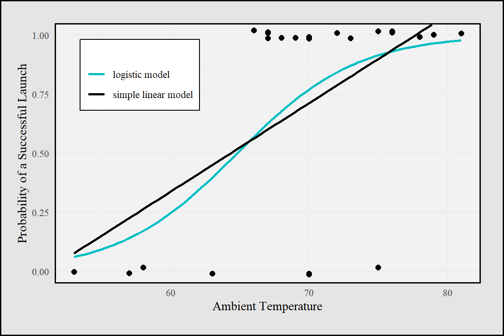
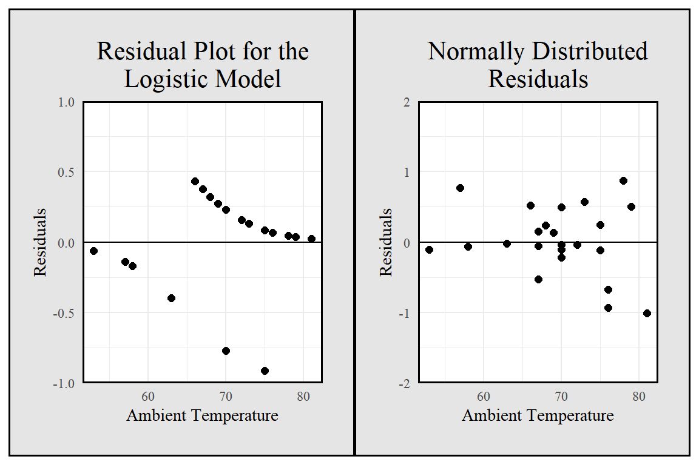

Chapter 6 Logistic Regression: The Space Shuttle Challenger
The best thing about being a statistician is that you get to play in everyone’s backyard.
—John Tukey2
There are many investigations where a researcher is interested in developing a regression model when the response variable is dichotomous (has only two categories). Dichotomous responses can be represented with binary data (data with values of only zero or one). Logistic regression is used to examine the relationship between one or more explanatory variables and a binary response variable.
In this chapter, we will look at several studies, including O-ring failure data provided by the National Aeronautics and Space Administration (NASA) after the space shuttle Challenger disaster, in order to introduce the following logistic regression techniques:
- Calculating and interpreting the logistic regression model
- Using the Wald statistic and likelihood ratio tests to determine the significance of individual explanatory variables
- Calculating the log-odds function and maximum likelihood estimates
- Conducting goodness-of-fit tests to evaluate model appropriateness
- Assessing regression model performance by looking at a classification table, showing correct and incorrect classification of the response variable
- Extending logistic regression to cases with multiple explanatory variables
6.1 Investigation: Did Temperature Influence the Likelihood of an O-Ring Failure?
On January 28, 1986, the NASA space shuttle program launched its 25th shuttle flight from Kennedy Space Center in Florida. Seventy-three seconds into the flight, the external fuel tank collapsed and spilled liquid oxygen and hydrogen. These chemicals ignited, destroying the shuttle and killing all seven crew members on board. Reports to President Reagan and videos of the event are available at the Kennedy Space Center website.*
Investigations showed that an O-ring seal in the right solid rocket booster failed to isolate the fuel supply. Figure 6.1 shows the space shuttle Challenger just after ignition with the fuel tank and two 149.16-foot-long solid rocket boosters. Figure 6.2 shows a diagram of a solid rocket booster. Because of its size, the rocket boosters were built and shipped in separate sections. A forward, center and aft field joint connected the sections. Two O-rings (one primary and one secondary), which resemble giant rubber bands 0.28 inch thick but 37 feet in diameter, were used to seal the field joints between each of the sections.
An O-ring seal was used to stop the gases inside the solid rocket booster from escaping. However, the cold outside air temperature caused the O-rings to become brittle and fail to seal properly. Gases at 5800 °F escaped and burned a hole through the side of the rocket booster.

Figure 6.1: Picture of the space shuttle Challenger just after ignition. Each solid rocket booster had six O-rings, two at each field joint. The O-rings at the right aft field joint failed.
The Report of the Presidential Commission on the Space Shuttle Challenger Accident, also known as the Rogers’ Commission Report, states:
““O-ring resiliency is directly related to its temperature. . . . A warm O-ring that has been compressed will return to its original shape much quicker than will a cold O-ring when compression is relieved. . . . A compressed O-ring at 75 degrees Fahrenheit is five times more responsive in returning to its uncompressed shape than a cold O-ring at 30 degrees Fahrenheit. . . . At the cold launch temperature experienced, the O-ring would be very slow in returning to its normal rounded shape. . . . It would remain in its compressed position in the O-ring channel and not provide a space between itself and the upstream channel wall. Thus, it is probable the O-ring would not . . . seal the gap in time to preclude joint failure due to blow-by and erosion from hot combustion gases. . . . Of 21 launches with ambient temperatures of 61 degrees Fahrenheit or greater, only four showed signs of O-ring thermal distress: i.e., erosion or blow-by and soot. Each of the launches below 61 degrees Fahrenheit resulted in one or more O-rings showing signs of thermal distress.”\(^2\)

Figure 6.2: Diargam of a solid rocket booster.
A lamentable aspect of this disaster is that the problem with the O-rings was already understood by some engineers prior to the Challenger launch. In February 1984, the Marshall Configuration Control Board sent a memo about the O-ring erosion that occurred on STS 41-B (the 10th space shuttle flight and the 4th mission for the Challenger shuttle). Messages continued to increase in intensity, as evidenced by a 1985 internal memo from Thiokol Corporation, the company that designed the O-ring. Employees from Thiokol wrote the following to their Vice President of Engineering: “This letter is written to ensure that management is fully aware of the seriousness of the current O-Ring erosion problem in the SRM joints from an engineering standpoint.”\(^3\)
With the temperature on January 28, 1986, expected to be 31°F, Thiokol Corporation recommended against the Challenger launch. However, this flight was getting significant publicity because a high school teacher, Christa McAuliffe, was on the flight. The flight had already been delayed several times, and there was no quick solution to the O-ring concern. The engineers were overruled, and the decision was made to go ahead with the launch. The eventual presidential investigation stated, >“The decision to launch the Challenger was flawed. Those who made that decision were unaware of the recent history of problems concerning the O-rings and the joint and were unaware of the initial written recommendation of the contractor advising against the launch at temperatures below 53 degrees Fahrenheit and the continuing opposition of the engineers at Thiokol after the management reversed its position. They did not have a clear understanding of Rockwell’s concern that it was not safe to launch because of ice on the pad. If the decision makers had known all of the facts, it is highly unlikely that they would have decided to launch 51-L on January 28, 1986.”\(^4\)
It seems that even though some engineers did comprehend the severity of the problem, they were unable to properly communicate the results. Prior to the ill-fated Challenger flight, the solid rocket boosters for 24 shuttle launches were recovered and inspected for damage. Even though O-ring damage was present in some of the flights, the O-rings were not damaged enough to allow any gas to escape. Since damage was very minimal, all 24 prior flights were considered a success by NASA.
- Flight 4 is a missing data point because the rockets were lost at sea.
Table 6.1 shows the temperature at the time of each launch and whether any damage was visible in any of the O‑rings. In this chapter, we will define a successful launch as one with no evidence of any O‑ring damage. In Table 6.1, Successful Launch is a categorical variable, with 0 representing a launch where O‑ring damage occurred and 1 indicating a successful launch with no O‑ring damage. Throughout the rest of this investigation, the relatively small data set in Table 6.1 will be used to demonstrate techniques that can be used to determine if the likelihood of O‑ring damage is related to temperature.
Activity: Describing the Data
Based on the description of the Challenger disaster O‑ring concerns, identify which variable in the space shuttle data set in Table 6.1 should be the explanatory variable and which should be the response variable.
Imagine you were an engineer working for Thiokol Corporation prior to January 1986. Create a few graphs of the data in Table 6.1. Is it obvious that temperature is related to the success of the O‑rings? Submit any charts or graphs you have created that show a potential relationship between temperature and O‑ring damage.
In this chapter, we will develop a regression model using a binary response variable, Successful Launch. For the space shuttle data set, y = 1 represents a successful flight with no O-ring damage and y = 0 represents a flight with some O-ring damage. Binary response data occur in many fields; for example, we may want to know
- whether a disease is present or absent
- whether or not a person is a good credit risk for a loan
- whether or not a high school student should be admitted to a particular college
- whether or not an individual is involved in substance abuse
The next section describes why the least squares regression model is not appropriate when the response is binary. Logistic regression is used to examine the relationship between one or more explanatory variables and a binary response variable. Like other regression models, logistic regression models often have explanatory variables that are quantitative, but they can be categorical as well
6.2 Review of the Least Squares Regression Model
In Chapters 2 and 3, you saw that the ordinary least squares regression model has the form \[\begin{align} y_i &= \beta_0 + \beta_1 x_i + \epsilon_i \quad\text{for } i = 1, 2, 3, \dots, n \tag{6.1} \end{align}\]
where \(n\) is the number of observations, \(y_i\) is the \(i\)th value of a , \(\beta_0\) and \(\beta_1\) are regression coefficients, \(x_i\) is the \(i\)th value of the explanatory variable, and \(\epsilon_i\) represents normally distributed errors with a constant variance. Equation (6.2) states that the mean response (the expected response at each particular \(x_i\)) is equal to the linear predictor \(\beta_0 + \beta_1 x_i\) for each observed value \(x_i\):
\[\begin{align} E(Y_i \mid x_i) &= \beta_0 + \beta_1 x_i \quad\text{for } i = 1, 2, 3, \dots, n \tag{6.2} \end{align}\]
where \(\beta_0\) and \(\beta_1\) are parameters that can be estimated with sample data. In addition to assuming that the regression model has a linear predictor, we assume that the error terms in the least squares regression model are independent and follow the normal distribution with a zero mean and a fixed standard deviation:
\[\begin{align} \epsilon_i &\overset{\mathrm{iid}}{\sim} N(0, \sigma^2) \quad\text{for } i = 1, 2, 3, \dots, n \tag{6.3} \end{align}\]
Equation (6.3) states that each independent and identically distributed error term follows a normal probability distribution that is centered at zero and has a constant variance.
When there is only one explanatory variable, as in Equation (6.1), ordinary least squares regression is often called simple linear regression. As shown in Chapter 3, the model is called least squares regression because the line minimizes the sum of the squared residuals (the difference between an observed value and the expected response). Least squares estimates for \(\beta_0\) and \(\beta_1\) (represented as \(b_0 = \hat\beta_0\) and \(b_1 = \hat\beta_1\)) can be calculated even when the normality and equal variance assumptions are violated. However, these assumptions about the error terms are needed to conduct hypothesis tests and construct confidence intervals for \(\beta_0\) and \(\beta_1\).
6.3 The Logistic Regression Model
When the response variable is binary, the response is typically defined as a probability of success, instead of 0 or 1. For example, in Question 3, when the temperature is 60°F, the least squares regression line estimates that the probability of a successful launch is 0.338. The expected response at each particular \(x_i\) is defined as
\[\begin{align} \pi_i &= P(Y_i = 1) = \text{probability that a launch has no O-ring damage at temperature } x_i \notag \\ &= E(Y_i \mid x_i) \notag \\ &= \beta_0 + \beta_1 x_i \quad \text{for } i = 1,2,3,\dots,n \tag{6.4} \end{align}\]
While the linear model (\(\beta_0 + \beta_1 x_i\)) in Equation (6.4) is simple, it is not appropriate to use, since probabilities must be between 0 and 1. For example, with a temperature value \(x_i = 50\), the least squares regression model in Question 3 would predict a probability of \(-0.036\). In order to restrict the predictions to values between 0 and 1, an S-shaped function called the log-odds function will be used.
Logistic regression uses the following model to fit an S-shaped relationship between \(\pi\) and \(x\):
\[\begin{align} \ln\bigl(\frac{\pi_i}{1 - \pi_i}\bigr) &= \beta_0 + \beta_1 x_i \tag{6.5} \end{align}\]
where ln represents the natural log, \(\beta_0\) and \(\beta_1\) are regression parameters, and \(\pi_i\) is the probability of a successful launch for a given temperature (\(x_i\)). The ratio \(\pi/(1 - \pi)\) is called the odds, the probability of success over the probability of failure. Thus, the function ln[\(\pi/(1 - \pi)\)] is called the log-odds of \(\pi\) or the logistic or logit transformation of \(\pi\).* Figure 6.3 shows both the least squares regression model and the logistic regres- sion model for the space shuttle data.
In Chapter 6, the odds of an outcome are defined as \(\pi/(1 - \pi)\), the probability of a success (no O-ring damage) over the probability of a failure (O-ring damage). For example, if a computer randomly selects a day of the week, the odds of selecting Saturday (Saturday is considered a success) are 1 to 6, since
\[\begin{align} \text{odds} = \frac{\pi}{1 - \pi} = \frac{1/7}{(1 - (1/7))} = \frac{1}{6}. \notag \end{align}\]
Similarly, the odds are 6 to 1 against Saturday being selected (any day but Saturday is a success).

Figure 6.3: Space shuttle data with a simple linear regression model and a logistic regression model.
*?Throughout this chapter, we will use terms such as or , but we actually use natural logs (ln) in our calculations.
Equation (6.5) can be solved for \(\pi_i\) to show that
\[\begin{align} \pi_i &= \frac{e^{\beta_0 + \beta_1 x_i}}{1 + e^{\beta_0 + \beta_1 x_i}} \tag{6.6} \end{align}\]
Binary logistic regression assumes that for each \(x_i\) value, the response variable \(Y_i\) follows a Bernoulli distribution (described in the extended activities). This means we assume that (1) each \(Y_i\) is independent, (2) each \(Y_i\) falls into exactly one of two categories represented by either a zero or a one, and (3) for each \(x_i\), \(P(Y_i = 1) = \pi_i\) and \(P(Y_i = 0) = 1 - \pi_i\) (more specifically written as \(P(Y_i = 1 \mid x_i) = \pi_i\) and \(P(Y_i = 0 \mid x_i) = 1 - \pi_i\)). This third assumption states that for any given explanatory variable (a specific temperature value), the probability of success (no O-ring failures) is constant.
It is possible to use least squares regression techniques to estimate \(\beta_0\) and \(\beta_1\) in logistic regression models. However, the assumptions needed for hypothesis tests and confidence intervals using the ordinary least squares regression model are not met. Specifically, even after the log-odds transformation, Figure 6.3 demonstrates that the residuals are not normally distributed and the variability of the residuals depends on the explanatory variable.
Residuals (observed values minus expected values) are used to estimate the error terms. Visual inspection of residual plots is often used to check for normality. Recall from previous work in regression that if the residuals are normally distributed, the scatterplot of the residuals versus the explanatory variable should resemble a randomly scattered oval of points. For example, it should resemble the random scatter you would see if you happened to drop 23 coins (one for each residual value).
In logistic regression, the residuals are \(y_i - \hat\pi_i\). If the observed response \(y_i = 0\), then the residual value is \(-\hat\pi_i\). If the observed response \(y_i = 1\), then the residual value is \(1 - \hat\pi_i\). This leads to the two curves shown in Figure 6.4. When the temperature is low in the space shuttle data (around 55°F, as seen in Figure 6.3), the observed responses tend to be zero and the predicted responses (\(\hat\pi_i\)’s) are small positive numbers. Thus, the residual values (\(-\hat\pi_i\)’s) are negative and close to zero. When the temperature is high, the observed responses tend to be one, the predicted responses are close to one, and the residual values are positive and close to zero.
## Warning: package 'patchwork' was built under R version 4.5.1
Figure 6.4: A scatterplot of the residuals from the space shuttle logistic regression model and a sample of what a scatterplot of normally distributed residuals might look like.
6.4 The Logistic Regression Model Using Maximum Likelihood Estimates
Logistic regression is a special case of what is known as a generalized linear model. Generalized linear models expand linear regression models to cases where the normal assumptions do not hold. All generalized linear models have three components:
Generalized linear models can also be used when the response variable follows other distributions. For example, \(y\) may follow a Poisson or gamma distribution. Textbooks on generalized linear models derive link functions for each of these types of response variables. In least squares regression where the response has a normal distribution, as in Equation (6.1), the link function is simply the identity function. In other words, the response needs no transformation in simple linear regression models.
Clearly the logistic regression model in Figure 6.3 is nonlinear. So it may seem somewhat surprising to consider logistic regression as a generalized linear model. The reason we still call this model linear is that the link function, the log-odds transformation, is modeled with a linear predictor, \(\beta_0 + \beta_1 x\).
Instead of using least squares estimates, generalized linear models use the method of maximum likelihood to estimate the coefficients \(\beta_0\) and \(\beta_1\). The extended activities provide more detail on calculating maximum likelihood estimates in logistic regression. In the space shuttle example, we will simply use a computer software package to find maximum likelihood estimates of \(\beta_0\) and \(\beta_1\).
In least squares regression, we often transform the response variable (\(y\)) so that the data fit model assumptions. In addition to linearizing data, transforming \(y\) impacts the variability and the distribution of the error terms. In generalized linear models, the link function transforms the expected response (\(\pi\)) to fit a linear predictor. For those who have had calculus, link functions are also differentiable and invertible.
Activity: Using Software to Calculate Maximum Likelihood Estimates
Solve Equation (6.5) for \(\pi_i\) to show that Equation (6.6) is true.
Use Equation (6.6) to create six graphs. In each graph, plot the explanatory variable (\(x\)) versus the expected probability of success (\(\pi\)) using \(\beta_0 = -10\) and \(-5\) and \(\beta_1 = 0.5\), \(1\), and \(1.5\). Repeat the process for \(\beta_0 = 10\) and \(5\) and \(\beta_1 = -0.5\), \(-1\), and \(-1.5\).
- Do not submit the graphs, but explain the impact of changing \(\beta_0\) and \(\beta_1\).
- For all of these graphs, what value of \(\pi\) appears to have the steepest slope?
- Do not submit the graphs, but explain the impact of changing \(\beta_0\) and \(\beta_1\).
Use statistical software to calculate the maximum likelihood estimates of \(\beta_0\) and \(\beta_1\). Compare the maximum likelihood estimates to the least squares estimates in Question 3.
Figure 6.3 shows a logistic regression model using maximum likelihood estimates of \(\beta_0\) and \(\beta_1\). Using Equation (6.6) and the maximum likelihood estimates from Question 6, we can estimate the probability that a launch has no O-ring damage at temperature \(x_i\):
\[\begin{align} \hat\pi_i &= \frac{e^{b_0 + b_1 x_i}}{1 + e^{b_0 + b_1 x_i}} \\ &= \frac{e^{-15.043 + 0.232 x_i}}{1 + e^{-15.043 + 0.232 x_i}} \\ &\quad \text{for } i = 1,2,3,\dots,n \tag{6.9} \end{align}\]
Notice that \(\pi\) in Equation (6.6) has been replaced by \(\hat\pi\) in Equation (6.9) because the parameters in the linear regression model (\(\beta_0\) and \(\beta_1\)) have been estimated with our sample data; \(b_0 = \hat\beta_0 = -15.043\) and \(b_1 = \hat\beta_1 = 0.232\).
Activity: Estimating the Probability of Success with Maximum Likelihood Estimates
- Use Equation (6.9) to predict the probability that a launch has no O-ring damage when the temperature is 31°F, 50°F, and 75°F.
At this point, it seems reasonable to question why the O-rings were not considered a higher risk at the time of the 1986 Challenger launch. After all, the odds of a successful launch (no O-ring damage) at the expected temperature of 31°F are about 1 to 2555 and the predicted odds change dramatically based on temperature. It is important to recognize that the previous launches did not result in the same disaster as the Challenger launch because the O-rings showed only “minor” damage. This wasn’t enough for gas to escape—only an indicator that the O-rings might not be as resilient as expected.
CAUTIONEstimating a value for a temperature of 31°F is extrapolating beyond our data set. Just as in least squares regression, caution should be used when making predictions outside the range of explanatory variables that are available.
6.5 Interpreting the Logistic Regression Model
Interpretation of logistic regression models is often done in terms of the odds of success (odds of a launch with no O-ring damage). When the temperature is 59°F, the odds of a successful launch with no O-ring damage are \(\hat\pi/(1 - \hat\pi) = 0.2066/(1 - 0.2066) = 0.2605 \approx 0.25 = 1/4\). Thus, at 59°F, we state that the odds of a successful launch are about 1 to 4. When the temperature is 60°F, the odds of a successful launch are \(\hat\pi/(1 - \hat\pi) = 0.3285 \approx 0.333 \approx 1/3\). At 60°F, we state that the odds of a successful launch are about 1 to 3.
The slope is not as easy to interpret for a logistic regression model as for a simple linear regression model. While ordinary least squares regression focuses on \(\beta_1\), logistic regression measures the change in the odds of success by the term \(e^{b_1}\), which is called the odds ratio. If we increase \(x_i\) by 1 unit in a logistic regression model, the predicted odds that \(y = 1\) (i.e., the launch will not have any O-ring damage) will be multiplied by \(e^{b_1}\). For example, when the temperature changes from 59°F to 60°F, the odds increase by a multiplicative factor of \(e^{b_1} = e^{0.232} = 1.2613\). In other words,
\[\begin{align} \text{odds of success at 59°F} \times e^{b_1} &= 0.2605(1.2613) \notag \\ &= 0.3285 \notag \\ &= \text{odds of success at 60°F} \notag \end{align}\]
For any temperature value \(x_i\), this relationship can also be stated as
\[\begin{align} \text{odds ratio} = e^{b_1} &= \frac{\text{odds}(x_i + 1)}{\text{odds}(x_i)} \tag{6.10} \end{align}\]
Taking the exponent of Equation (6.5), we can write the odds of success as \[\begin{align} \text{odds} = \biggl(\frac{\pi_i}{1 - \pi_i}\biggr) &= e^{\beta_0 + \beta_1 x_i} = e^{\beta_0}(e^{\beta_1})^{x_i} \tag{6.11} \end{align}\]
Thus, as \(x_i\) increases by 1, \[\begin{align} e^{\beta_0}(e^{\beta_1})^{x_i + 1} &= e^{\beta_0}(e^{\beta_1})^{x_i}(e^{\beta_1}) \tag{6.12} \end{align}\]
Activity: Interpreting a Logistic Regression Model
Calculate the odds of a launch with no O-ring damage when the temperature is 60°F and when the temperature is 70°F.
When \(x_i\) increases by 10, state in terms of \(e^{b_1}\) how much you would expect the odds to change.
The difference between the odds of success at 60°F and 59°F is about 0.3285 – 0.2605 = 0.068. Would you expect the difference between the odds at 52°F and 51°F to also be about 0.068? Explain why or why not.
Create a plot of two logistic regression models. Plot temperature versus the estimated probability using maximum likelihood estimates from Question 6, and plot temperature versus the estimated probability using least squares estimates from Question 3.
Thus far, we have developed a model to estimate the odds of a successful launch with no O-ring failures. However, we have not yet discussed the variability of the estimates or how confident we can be of the results. In the next section, we will discuss two hypothesis tests that can be used to determine if the odds of a successful launch are related to temperature. In other words, can we conclude that the logistic regression coefficient \(b_1\) is not equal to zero?
6.6 Inference for the Logistic Regression Model
Assumptions for Logistic Regression Models
Inference for logistic regression uses statistical theory that is based on limits as the sample size approaches infinity. The techniques, based on what is called asymptotic theory, work well with large sample sizes, but are only approximate with outliers or small sample sizes. It is common for logistic regression models to be developed for data sets of any size, but savvy statisticians will always use caution when interpreting the results for data sets with small sample sizes (such as the space shuttle example).
D. Leonhardt, “John Tukey, 85, Statistician, Coined the Word ‘Software’,” New York Times Archives on the Web, 7/28/2000, stat.bell-labs.com/who/tukey/nytimes.html. John Tukey (1915–2000) had a formal background in chemistry and mathematics. Conducting data analysis during World War II peaked his interest in statistics, and he became one of the most influential statisticians of the 20th century.↩︎